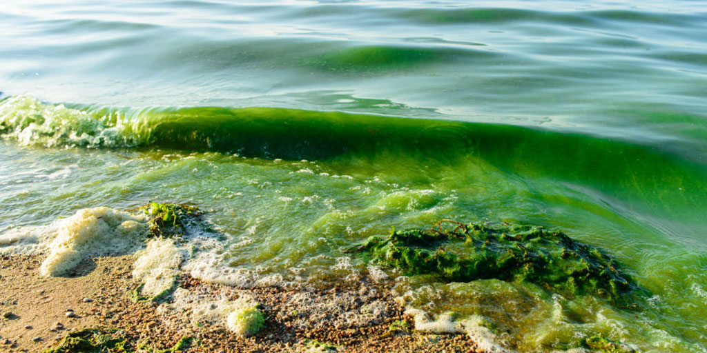

POISON ALGAE
In the laboratory, many harmful algal species produce more toxins and bloom faster in acidified waters.
MALNUTRITION
More people will be found malnourished and poisoned due to altered food quantity and quality.
DEVELOPMENT
We will be facing decreased oppurtunity to develop and obtain medical resources, food resources, etc. due to loss of biodiversity.